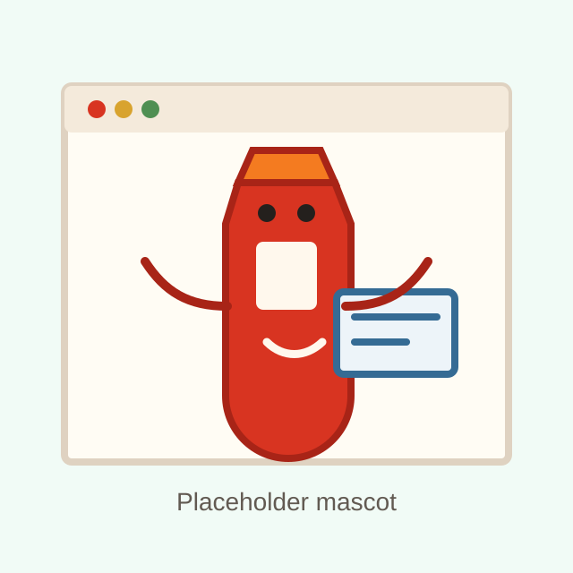

404
This page wandered off.
The link might be old, unfinished, or just taking a dramatic little detour. Head back to the Hub and keep exploring from there.

404
The link might be old, unfinished, or just taking a dramatic little detour. Head back to the Hub and keep exploring from there.
